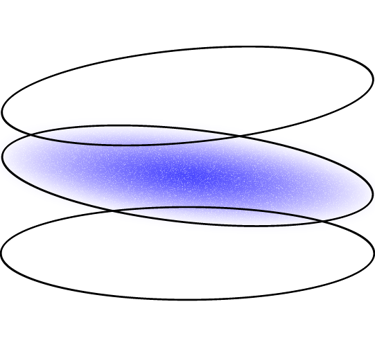

Phase 2
Data as Artifact
In the second phase of the course students learn how to make use of online data to study social and cultural phenomena: in a question-driven process, each group design protocols for data collection, analyze data and produce research findings using data visualizations. The outcome of this phase is an interactive research report.
Each report focuses on a specific issue: apps for face and body modifications; the aesthetic of conspiracy theories; the politics of content moderator jobs online; hashtag hijacking and other kinds of digital activism; the relationship between digital platforms and physical places; automation and content farms on Youtube.